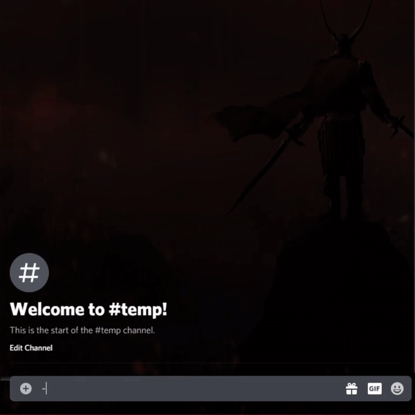
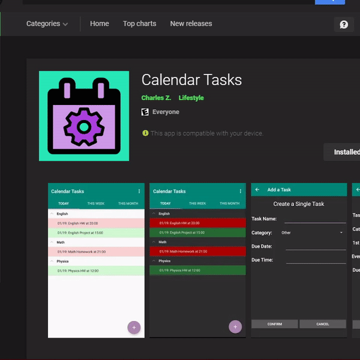
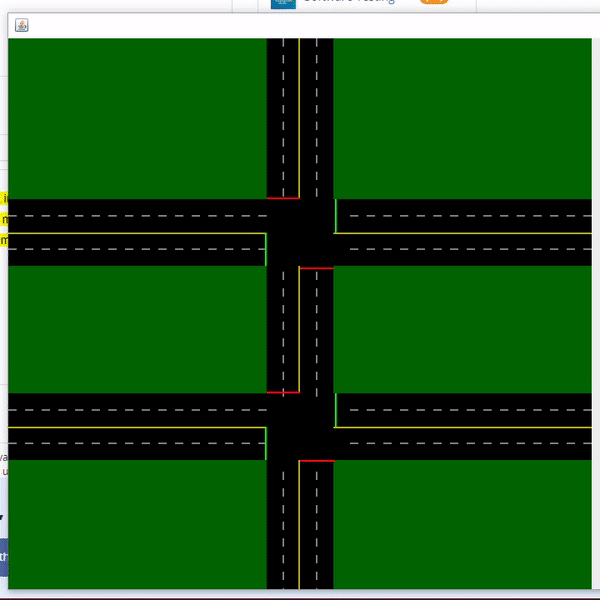
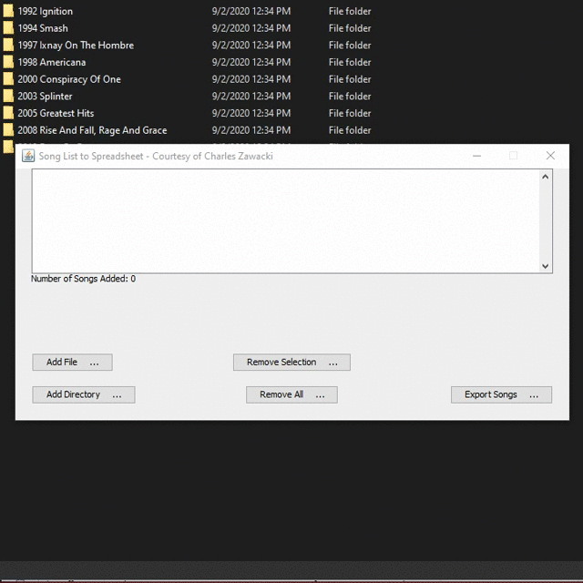
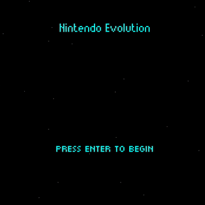

- Works with MariaDB backend to track latest user activity
- Consumes REST API correctly using Golang functions
- Provided a wide array of standard management commands for the Discord server the bot is in
- Utilized web scraping to pull perks for a video game and get Google Search results
- Utilized a Twitter stream and Google Custom Search Engine to pull relevant information
- Set up a basic CI/CD process to streamline the process of pushing new bot changes to production
- 20 fully-functioning commands as of 3/17/2021, accessible here
|

|
- Permits a user to create tasks on their phone that are added and categorized in both Google Calendar and Google Tasks
- Essentially linked Google Calendar and Google Tasks together before Google had implemented a similar function
|

|
- Simulates a set of intersections close to each other with adjustable light timing
- Used to help determine optimal traffic light times at a local congested intersection
- Received the Research with Social Impact Award in 2016
|

|
- Allows a user to add / remove songs to a list that would then be exported to a spreadsheet in order to facilitate tracking music
- Reads file metadata and records the information in the order designated by the user
|

|
- Created a map editor that can be used for 2D game design using Java 2D graphics engine
- Allows adding sprites via sprite sheets or individual images
- Provides basic art editing tools, ex. inkdrop, cropping, resizing
|

|
- Used 2D Java graphics engine to design a basic Galaga game
- Uses some basic game design principles to organize classes effectively
|

|